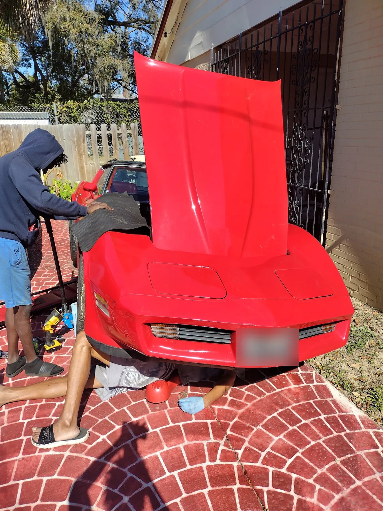
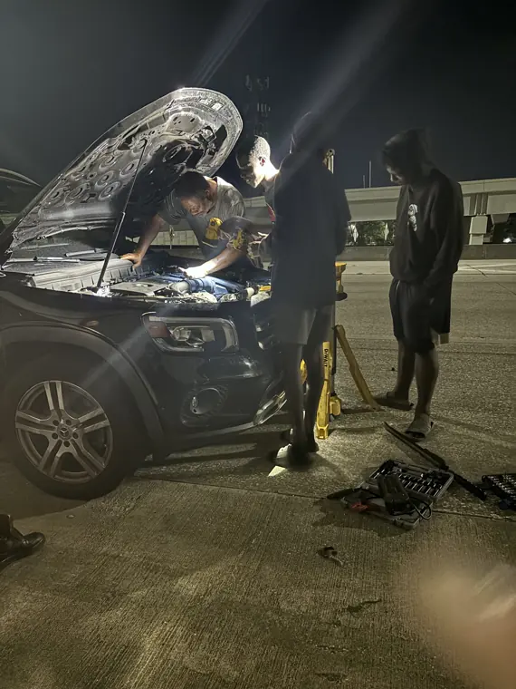

- Home
- Reviews
Jacksonvillehas our back.
Rated 4.6 out of 5 from 315 Google reviews. Here are some of them, word for word.

4.6 stars · 315 Google reviews
Customers keep coming back to the same things: fast arrival, honest explanations and fair pricing.
See all reviews on Google ↗Would 100% recommend to anybody who needs mechanic work in the Duval area. I called for help doing quite a bit of work on my 2000 Lincoln towncar when I was attempting a rather large project myself & ran into an issue. They were able to meet me at my house about an hour after I called & I felt the quote to perform the work was very fair. He sent me several pictures throughout the process. After performing the work he stayed & let me drive the car around a bit to ensure I was satisfied with the results & there were no issues left unattended. I will definitely be calling for future work. It's hard to find trustworthy people & there are a ton of “mechanics” out there who do not care about the quality of the craft, or have little mechanical knowledge. That is not the case here, don't hesitate to call!
I can't recommend Jacksonville Mobile Mechanics LLC enough! They helped me remove my drive shaft, and the entire experience exceeded my expectations from start to finish. Jaime and the crew were incredibly helpful, friendly, respectful, honest, efficient, and very affordable. They took the time to explain everything thoroughly, making sure I understood exactly what they were doing and why. I really appreciated how informative they were—they even pointed out other components that would likely need attention in the future and gave me honest, practical advice without trying to upsell me. Their pricing was more than fair, especially considering the quality of service and the amount of time they spent answering my questions and making sure I understood everything. It's rare to find mechanics who are this skilled, transparent, and affordable. It's hard to find a mechanic you can truly trust, but Jacksonville Mobile Mechanics LLC has definitely earned my confidence. Professional, reliable, knowledgeable, and genuinely committed to helping their customers. Jaime and the crew made what could have been a stressful repair a smooth and positive experience. They will absolutely be my designated mechanics from now on. If you're looking for honest, dependable, and very affordable mobile mechanics who truly go above and beyond, I highly recommend Jacksonville Mobile Mechanics LLC!
Man let me tell you this company not only rushed to get to me at a grocery store parking lot because it died there, but they fixed it right there in the parking lot and got me back on the road! Super nice, very fast, and efficient. They even offered to pick up the part for me! I can’t say enough good things about this company, but I will tell you that if you are in a pinch and need a top notch mechanic, you won’t find better than these guys!
I had a loose fuel rail in the engine bay that was very difficult to access. I called them, and they arrived in 35 minutes, took a look, and got to work. When they were done , they made sure everything was connected properly. Overall, I am very pleased with the results, and I would call them again in a heartbeat.
Struggled with problems on my truck for a 2 days and 1 night, couldn't figure out what was wrong. I had one mechanic come and he couldn't figure out what was wrong, but these guys came and it took them 30 seconds to diagnose and fix my issue 10/10 they will be getting called again if I run into more issues.
I discovered early this morning that my undercarriage splash guard was detached and had damage. I found Jacksonville Mobile Mechanics on Google and called them about it. I spoke with Shaun and Jamie over the phone and was assured they could fix my issue. I AM SO GRATEFUL! Their staff was very friendly and educated me on what happened, how it affected my vehicle, and what was done to repair it. Today’s Sunday. They had me in and out in 20 minutes. I found my mechanic. ❤️
Today was my first time using this service and I am very pleased with the work performed on my car. They arrived on time and worked efficiently. They helped me get the right part for my car and useful tips to help in the future. He went above and beyond for me. I’m new to Jacksonville so their assistance meant a lot to me. Again I thank you
We had two of our technicians broken down on a jobsite, called Jacksonville Mobile Mechanics, and they responded promptly, and pricing was very fair. Will definitely use them in the future! Thank you so much for great service!! - Geno
Best mechanics i’ve ever had, a lot of communication and very eager To get the job done right and on time. Highly recommend and plan to continue to use them for anything car related. Awesome service!
Great Service! Fast and reliable. They showed quick and did great quality work. Also educated me on my car. Will be using again!
This couple is dependable, fast and very reasonable! You can depend on them to do what they promise and more! Very pleasant people.
